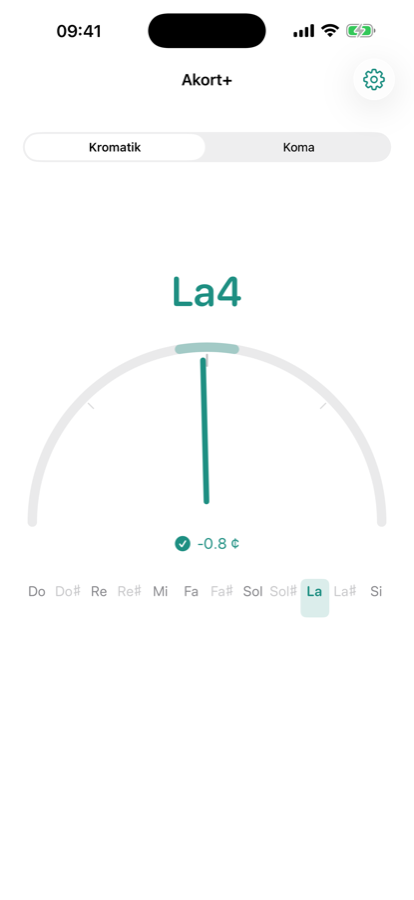
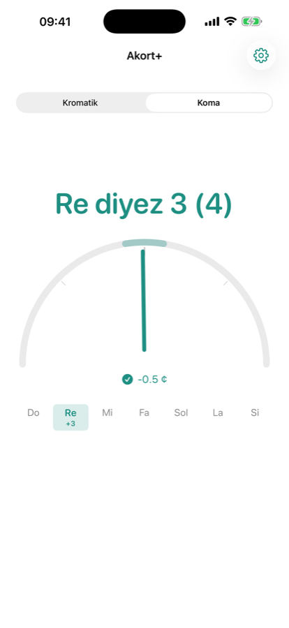
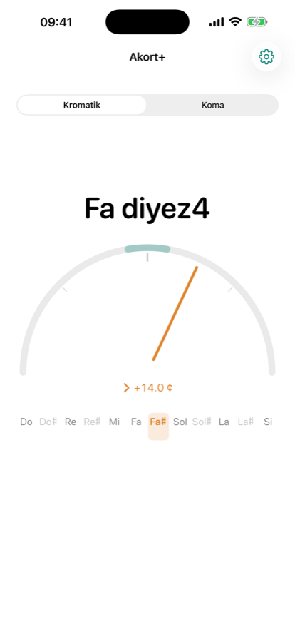

Makam müziği için akort aleti
Kromatik akordun yanında Türk makam müziğinin 53 komalı sistemiyle de akort yapar. Tel seçmenize gerek yok — çaldığınız notayı kendisi bulur.
iPhone ve iPad · Kurulum gerektirmeyen web sürümü · Android beta aşamasında



Ne yapar
Bir akort aletinden beklediğiniz her şey, artı makam müziğinin ihtiyacı olan.
Mikrotonal akort
Piyasadaki akort uygulamalarının neredeyse tamamı yalnızca 12 sesli kromatik sisteme göre çalışır. Bağlama, ud, kanun, ney ve tanburda kullanılan koma perdeleri bu sistemde karşılıksızdır. Koma modunda “Fa diyez 3” gibi perdeler doğrudan gösterilir.
Tel seçmek yok
Hangi teli akort ettiğinizi söylemenize gerek yok. Çaldığınız sesi duyar, en yakın perdeyi bulur, ne kadar pes ya da tiz olduğunuzu cent hassasiyetiyle gösterir. Standart dışı düzenlerle de çalışır.
Nerede olduğunuzu görün
Göstergenin altındaki nota şeridi bulunduğunuz perdeyi bir oktav içinde işaretler. Komşu notaların nerede olduğunu görmek, notayı henüz kulaktan tanımayanlar için akordu belirgin şekilde kolaylaştırır.
Aktarım
Enstrümanınızı farklı akort ettiyseniz ama alışkın olduğunuz pozisyonlarla düşünmeye devam etmek istiyorsanız, çaldığınız notayı ve artık verdiği sesi seçersiniz. Yalnız adlar değişir; cent okuması gerçekte çaldığınız perdeyi ölçmeye devam eder.
Referans frekans
A4 referansı 415–466 Hz arasında ayarlanabilir. Topluluğunuz 440 dışında bir diyapazonda çalıyorsa uygulama ona göre ölçer. Akort toleransı ±3, ±5 veya ±10 cent.
Türkçe ve batı nota adları
Do-Re-Mi ya da C-D-E. Tercihiniz kayıtlı kalır. Ekran okuyucular (VoiceOver, TalkBack) akort durumunu, yönü ve sapma miktarını sesli okur; akortta olma durumu yalnızca renkle değil, iğnenin konumu ve bir simge ile de gösterilir.
Nerede çalışır
Aynı ölçüm çekirdeği üç platformda da aynı sonucu verir.
iPhone ve iPad
App Store'da yayında, ücretsiz. Uygulama sayfası
Tarayıcı
Kurulum yok, hesap yok. Mikrofon izni verip çalmaya başlayın. app.akortplus.com
Android
Kapalı beta testinde. Google Play'de yayına hazırlanıyor; testçi olmak isterseniz yazın.
Gizlilik
Akort+ hiçbir veri toplamaz. Mikrofon yalnızca frekans ölçmek için dinlenir; ses cihazınızdan çıkmaz, kaydedilmez, hiçbir yere gönderilmez. Mobil uygulamalar internet bağlantısı gerektirmez. Ayrıntı için gizlilik politikası.